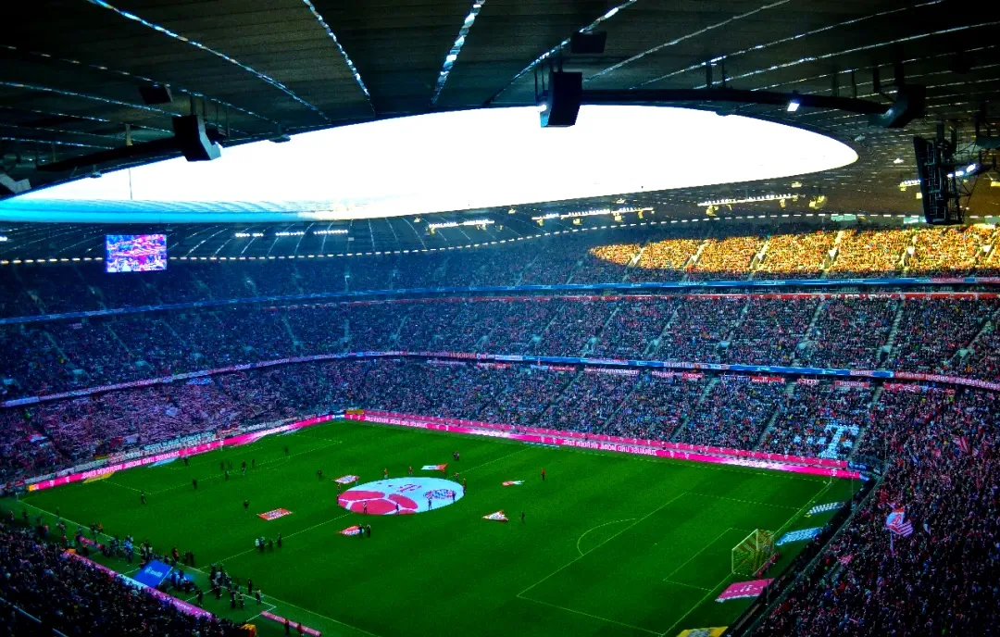
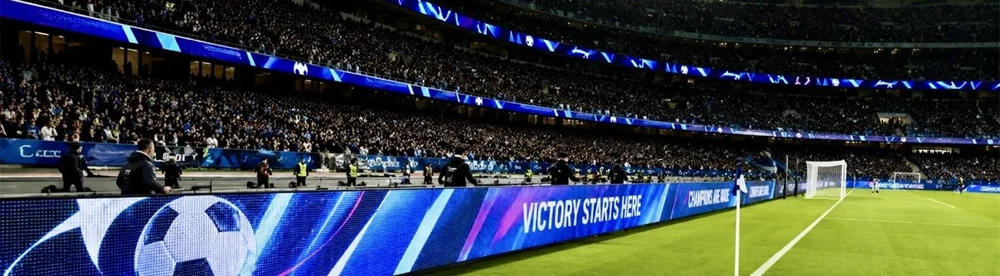
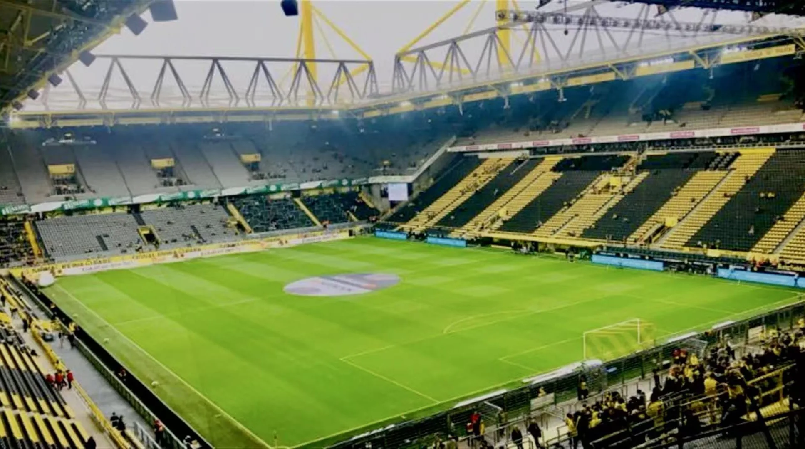

What is a stadium ribbon board LED? It is a long, usually continuous LED display that runs around a stadium or arena bowl — typically on a fascia, a mid-level ring, or a club-level band — used for sponsor rotation, scores, presentation graphics and wayfinding around the seating, rather than as the main video board and rather than as the pitch-side advertising ring. The buying decision is not which cabinet colour to prefer. It is how the ribbon is specified as a separate system: length and segmentation, pixel pitch for the nearest and farthest seats that will read it, brightness and weather for an open or roofed bowl, structure and service access on a live fascia, and a content path that can run independently of the jumbotron.
This guide is for venue owners, AV integrators and rental companies writing a sports venue ribbon board into a tender or a seasonal overlay. It does not replace the stadium perimeter buying guide or the pitch-side advertising board guide. Those pages cover the boards at grade around the field of play. This page covers the band around the bowl. For the venue as a whole, start with the sports venue LED guide and the football stadium display guide. Brightness by zone is in the sports venue brightness guide.
A pitch-side perimeter board sits at field level, in camera frame, with a tightly controlled height, a short viewing distance for nearby spectators, and often a league or rights-holder rule set. A stadium LED fascia or ribbon sits higher in the architecture, is seen from a much wider range of seats, and is usually longer — sometimes a full 360-degree run, sometimes broken at vomitories, suites or structural joints.
If the RFQ only says “stadium LED advertising boards,” bidders will reasonably quote a perimeter system, a ribbon, or both, and the prices and structures will not be comparable. Name the location on the bowl, the mounting height, the total length, and whether the boards are a permanent fascia installation or a temporary overlay for a tournament. Those four facts do more than a product nickname.
A useful ribbon specification is specific about the job, without copying a catalogue into the bid:
A ribbon that only has to carry colour and large logos can be a coarser pitch than a ribbon that must carry a readable clock for the upper tier. Do not let a single “P-number” stand in for that discussion.
Figure 1 shows a football bowl during a match, with a long LED advertising run at field level and a mid-level band of display around the seating. The two runs are different systems. A fascia or ribbon specification has to be written for the band around the bowl, not copied from the pitch-side brief.

Pixel pitch follows viewing distance. The viewing-distance guide records the common industry rule of thumb that the minimum comfortable distance in metres is roughly the pitch in millimetres. It is a starting point, not Asia Vision’s own measurement, and a ribbon is often read from many distances at once. Specify the closest seats that must resolve text, and the farthest seats that must still recognise a sponsor or a score, then ask the bidder to propose a pitch — or more than one pitch if the ribbon changes height around the bowl.
Brightness should be set by zone and by roof condition, not by a single “outdoor nits” slogan. An open-bowl fascia in afternoon sun is not the same job as a ribbon under a closed roof. Use the sports-venue brightness guide for the zone discussion, and require a typical operating level as well as a peak figure, so the ribbon does not flare into camera shots or into the lower seats when the house lights change.
Weather and ingress have to be stated, not assumed. Some outdoor series publish an IP rating; others do not. Do not write “IP65” onto a series that does not publish it. If the fascia is exposed, require a stated ingress rating, a drainage and cable-entry method, and a service plan that does not leave an open cabinet over seating during a match.
A ribbon is a long load on an existing fascia or a new steel ring. The LED supplier can confirm cabinet weight, mounting points and cable paths for the proposed series; the structural engineer of record still signs the bowl. Leave depth, anchorage, deflection and seismic or wind actions in that engineer’s scope, and give them real cabinet data rather than a placeholder.
Service access is often tighter than on a pitch-side ring. Front maintenance matters where there is no walkway behind the fascia; rear or catwalk access matters where a front swap would hang over spectators. State how a module is replaced, how long a segment can go dark, and where spare modules are held.
Figure 2 shows the structure of a football bowl: roof steel, tiers and the line around the pitch. A ribbon has to be designed into that architecture — mounting height, access and sightlines — not treated as a second perimeter board hung wherever there is space.

Asia Vision does not publish a dedicated “ribbon board” product line. The RFQ should start from the published outdoor or touring series that can be configured for a long fascia run, and should ask the supplier to confirm pitch, brightness, protection and service for that run.
D-PRO is the outdoor SMD fixed series with front maintenance and high brightness: P5 / P5.7 / P6.67 / P8 / P10, module 480 × 320 mm, brightness up to 10,000 cd/m². The page does not publish an IP rating, a refresh rate or a viewing angle in the specification table. If the fascia is exposed, those figures must be requested and confirmed on the quotation. COB EH-PRO is a premium outdoor fine-pitch COB series: P1.5625 / P1.953, 3500 cd/m², contrast ≥10000:1, IP65, 500 × 500 × 90 mm die-cast cabinet, refresh ≥3840 Hz. It is a closer-view outdoor option, not an automatic choice for a long-distance upper-tier ribbon. COB ZH is a touring COB series at P1.95 / P2.6, 4000 cd/m², contrast ≥10000:1, refresh ≥7680 Hz, curving range −7.5° to +7.5°, wind resistance up to 20 m/s, in a 500 × 1000 × 94 mm die-cast cabinet — a starting point for a temporary or overlay ribbon, not a substitute for a fixed fascia design unless the RFQ says so.
None of those pages publish a standard ribbon height, a league-approved length, a fascia clamp, or a rights-holder certification. Product pages publish a 3-year warranty and 18-day standard factory dispatch. A long custom run, a structural interface or a site commissioning window can take longer, and should sit in the programme.
A workable stadium ribbon board LED RFQ locates the run and asks for a design to that location:
Attach a bowl section or fascia drawing, the closest and farthest reading distances, the content list, and whether the installation is permanent or a tournament overlay. If a competition or rights holder has a technical regulation for fascia advertising, attach that document; do not ask the LED bidder to invent it.
For a permanent outdoor fascia at typical stadium reading distances, start the conversation with D-PRO and confirm protection and pitch on the quotation. For a closer-view outdoor fine-pitch band, start with COB EH-PRO. For a touring or tournament overlay ribbon, start with COB ZH. Send the run length, the mounting height, the closest seats that must read text, and whether the job is fixed or a hire. We will confirm the cabinet series and, on the quotation, any protection, curve or interface items that can be offered. We will not invent an IP rating, a league approval or a standard ribbon size that is not published on the product page. Start the enquiry through the contact form or email info@asiavisionled.com.
Specifying a stadium ribbon or fascia LED board? Send the run length, the mounting height, the closest reading distance and whether the job is fixed or a hire, and we will reply with the cabinet data that can be confirmed. Start a project enquiry.